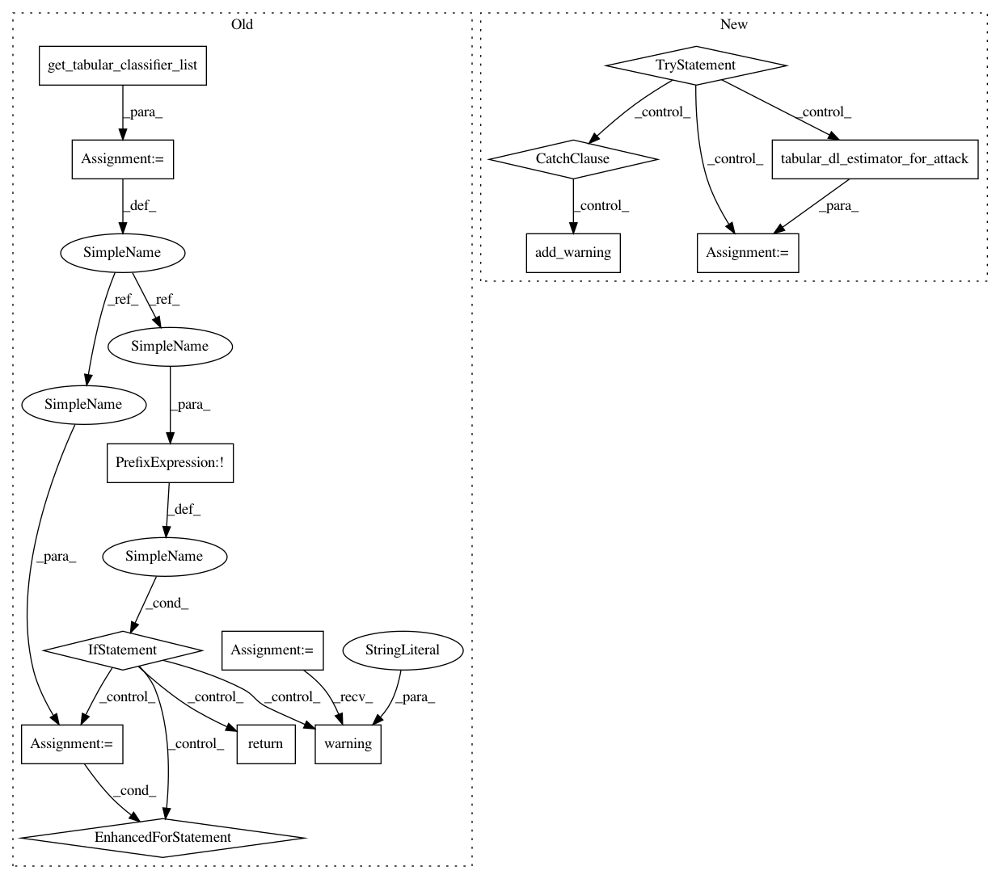

10686681ded0802f4f234064367a78a57144270e,tests/attacks/inference/test_membership_inference.py,,test_black_box_loss_tabular,#Any#Any#Any#,86
Before Change
@pytest.mark.parametrize("model_type", ["nn", "rf", "gb"])
def test_black_box_loss_tabular(model_type, get_tabular_classifier_list, get_iris_dataset):
classifier_list = get_tabular_classifier_list(MembershipInferenceBlackBox)
if not classifier_list:
logging.warning("Couldn"t perform this test because no classifier is defined")
return
for classifier in classifier_list:
if type(classifier).__name__ == "PyTorchClassifier" or type(classifier).__name__ == "TensorFlowV2Classifier":
attack = MembershipInferenceBlackBox(classifier, input_type="loss", attack_model_type=model_type)
backend_check_membership_accuracy(attack, get_iris_dataset, attack_train_ratio, 0.15)
@pytest.mark.only_with_platform("keras")
@pytest.mark.skipif(keras.__version__.startswith("2.2"), reason="requires Keras 2.3.0 or higher")
def test_black_box_keras_loss(get_iris_dataset):
(x_train, y_train), (_, _) = get_iris_dataset
After Change
@pytest.mark.parametrize("model_type", ["nn", "rf", "gb"])
def test_black_box_loss_tabular(model_type, tabular_dl_estimator_for_attack, get_iris_dataset):
try:
classifier = tabular_dl_estimator_for_attack(MembershipInferenceBlackBox)
if type(classifier).__name__ == "PyTorchClassifier" or type(classifier).__name__ == "TensorFlowV2Classifier":
attack = MembershipInferenceBlackBox(classifier, input_type="loss", attack_model_type=model_type)
backend_check_membership_accuracy(attack, get_iris_dataset, attack_train_ratio, 0.15)
except ARTTestException as e:
add_warning(e)
@pytest.mark.skipMlFramework("tensorflow", "pytorch", "scikitlearn", "mxnet", "kerastf")
@pytest.mark.skipif(keras.__version__.startswith("2.2"), reason="requires Keras 2.3.0 or higher")
def test_black_box_keras_loss(get_iris_dataset):
try:
In pattern: SUPERPATTERN
Frequency: 5
Non-data size: 14
Instances
Project Name: IBM/adversarial-robustness-toolbox
Commit Name: 10686681ded0802f4f234064367a78a57144270e
Time: 2020-09-23
Author: killian.levacher@ibm.com
File Name: tests/attacks/inference/test_membership_inference.py
Class Name:
Method Name: test_black_box_loss_tabular
Project Name: IBM/adversarial-robustness-toolbox
Commit Name: 10686681ded0802f4f234064367a78a57144270e
Time: 2020-09-23
Author: killian.levacher@ibm.com
File Name: tests/attacks/inference/test_membership_inference.py
Class Name:
Method Name: test_black_box_tabular_gb
Project Name: IBM/adversarial-robustness-toolbox
Commit Name: 10686681ded0802f4f234064367a78a57144270e
Time: 2020-09-23
Author: killian.levacher@ibm.com
File Name: tests/attacks/inference/test_membership_inference.py
Class Name:
Method Name: test_rule_based_tabular
Project Name: IBM/adversarial-robustness-toolbox
Commit Name: 10686681ded0802f4f234064367a78a57144270e
Time: 2020-09-23
Author: killian.levacher@ibm.com
File Name: tests/attacks/inference/test_membership_inference.py
Class Name:
Method Name: test_black_box_tabular_rf
Project Name: IBM/adversarial-robustness-toolbox
Commit Name: 10686681ded0802f4f234064367a78a57144270e
Time: 2020-09-23
Author: killian.levacher@ibm.com
File Name: tests/attacks/inference/test_membership_inference.py
Class Name:
Method Name: test_black_box_tabular